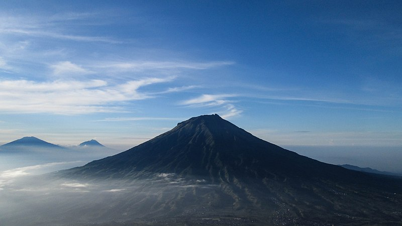
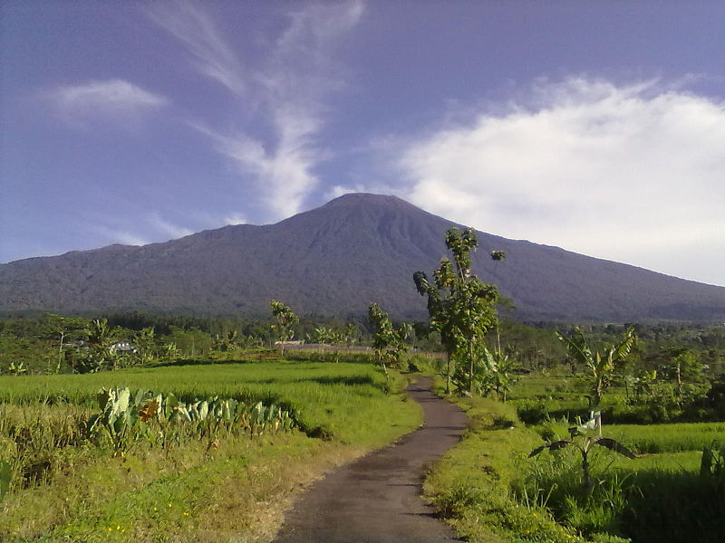

Sindoro
Gunung Sindoro, biasa disebut Sindara, atau juga Sundoro (Ketinggian puncak 3.150 mdpl) merupakan sebuah gunung volkano aktif yang terletak di Jawa Tengah, Indonesia, dengan Temanggung sebagai kota terdekat. Gunung Sindoro terletak berdampingan dengan Gunung Sumbing.Gunung sindara dapat terlihat jelas dari puncak sikunir dieng
Kawah yang disertai jurang dapat ditemukan di sisi barat laut ke selatan gunung, dan yang terbesar disebut Kembang. Sebuah kubah lava kecil menempati puncak gunung berapi. Sejarah letusan Gunung Sindara yang telah terjadi sebagian besar berjenis ringan sampai sedang (letusan freatik).
Hutan di kawasan Gunung Sundoro mempunyai bertipe hutan Dipterokarp Bukit, hutan Dipterokarp Atas, hutan Montane, dan Hutan Ericaceous atau hutan gunung.

Sumbing
Gunung Sumbing adalah gunung api yang terdapat di Jawa Tengah, Indonesia. (Ketinggian puncak 3.371 mdpl), gunung Sumbing merupakan gunung tertinggi ketiga di Pulau Jawa setelah Gunung Semeru dan Gunung Slamet. Gunung ini secara administratif terletak di tiga wilayah kabupaten, yaitu Kabupaten Magelang; Kabupaten Temanggung; dan Kabupaten Wonosobo. Bersama dengan Gunung Sindoro, Gunung Sumbing membentuk bentang alam gunung kembar, seperti Gunung Merapi dan Gunung Merbabu, apabila dilihat dari arah Temanggung. Celah antara gunung ini dan Gunung Sindoro dilalui oleh jalan provinsi yang menghubungkan kota Temanggung dan kota Wonosobo. Jalan ini biasa dijuluki sebagai "Kledung Pass". Letusan terakhir tercatat pada tahun 1730, yang membentuk kubah lava dengan aliran lava ke arah bibir kawah terendah Gunung Sumbing mempunyai kawasan hutan Dipterokarp Bukit, hutan Dipterokarp Atas, hutan Montane, dan Hutan Ericaceous atau hutan gunung. Sebagian besar wilayah lereng gunung ini telah digunakan untuk lahan pertanian.

Slamet
Gunung Slamet (Ketinggian puncak 3.428 mdpl.)adalah sebuah gunung berapi kerucut yang terdapat di Pulau Jawa, Indonesia. Gunung Slamet terletak di antara 5 kabupaten, yaitu Kabupaten Brebes, Kabupaten Banyumas, Kabupaten Purbalingga, Kabupaten Tegal, dan Kabupaten Pemalang, Provinsi Jawa Tengah. Gunung Slamet merupakan gunung tertinggi di Jawa Tengah serta kedua tertinggi di Pulau Jawa setelah Gunung Semeru. Kawah IV merupakan kawah terakhir yang masih aktif sampai sekarang, dan terakhir aktif hingga pada level siaga medio-2009.
Gunung Slamet cukup populer sebagai sasaran pendakian meskipun medannya dikenal sulit. Di kaki gunung ini terletak kawasan wisata Baturraden yang menjadi andalan Kabupaten Banyumas karena hanya berjarak sekitar 15 km dari Purwokerto.
